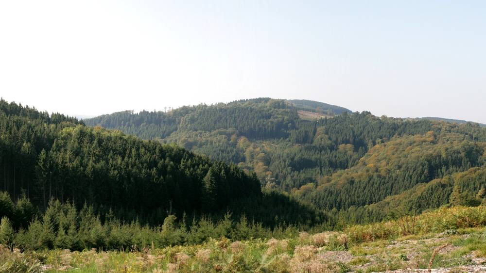

독일 린들라르 시와 마을 단체 29곳, 풍력 시민참여 몫 나누는 협약 서명

건설 중인 포겔베르크 풍력단지…시가 받는 금액의 80%는 반경 2.5km 단체, 20%는 시 전역 단체 몫
독일 노르트라인베스트팔렌주 린들라르 시와 인근 마을 단체 29곳이 건설 중인 포겔베르크 풍력단지의 시민참여 몫을 나누는 협약에 4일 저녁 서명했다. 풍력 사업자가 시에 내야 하는 금액의 80%는 반경 2.5km 안 단체들이 받고, 나머지 20%는 시 전역에서 활동하는 단체의 사업에 쓰기로 했다. 풍차가 돌기 시작하면 해마다 약 65,000유로가 들어오는 것으로 계산돼, 단체당 약 2,200유로를 20년 동안 받을 수 있다. 2025년 3월 시청에 이 아이디어를 처음 낸 사람은 주민 디터 오르바흐다. 스벤 엥엘만 시장은 시와 단체들 사이에 이런 협약은 다른 곳에 없다고 설명했고, 이번 합의가 "큰 항의 없이" 이뤄졌다고 말했다. 시장은 시 전역 단체가 빠진다는 비판이 있었음을 인정하며, 남은 20%가 그런 단체의 몫이라고 밝혔다.
시민에너지 관점
단체당 연 2,200유로는 큰돈이 아니지만, 20년간 이어지는 몫이 체육·음악·어린이집 같은 마을 활동의 고정 재원이 된다는 점이 중요하다. 풍력 수익이 개인이 아닌 마을 단체로 흘러가는 구조라 이웃 단체가 모두 당사자가 되고, 시 전역 단체가 소외된다는 우려에는 20% 별도 몫으로 답했다. 몫을 서면으로 미리 약속해 두면 풍력을 둘러싼 지역 갈등을 줄이는 데도 도움이 될 수 있다. 한국의 지자체도 풍력·태양광 이익을 마을 단체에 나누는 틀을 조례와 협약으로 서둘러 검토해야 한다.
출처: Kölner Stadt-Anzeiger 2026-11-06 Florian Sauer 원문 보기
独リンドラー市と地域団体29団体、風力の市民参加分を分け合う協定に署名
建設中のフォーゲルベルク風力団地…市が受け取る額の80%は半径2.5km内の団体、20%は市全域の団体向け
ドイツ・ノルトライン＝ヴェストファーレン州のリンドラー市と周辺の地域団体29団体が、建設中のフォーゲルベルク風力団地の市民参加分を分け合う協定に、4日夜に署名した。風力事業者が市に支払う金額の80%は半径2.5km以内の団体が受け取り、残る20%は市全域で活動する団体の事業に充てる。風車が回り始めると毎年約65,000ユーロが入る計算で、1団体あたり約2,200ユーロを20年間受け取れる。この案を2025年3月に市役所へ最初に持ち込んだのは住民のディーター・オルバッハ氏だ。スヴェン・エンゲルマン市長は、市と団体の間でこうした協定は他に例がないと説明し、今回の合意が「大きな抗議なしに」成立したと述べた。市長は、市全域の団体が外れるという批判があったことを認め、残る20%がそうした団体の分だと語った。
市民エネルギーの視点
1団体あたり年2,200ユーロは大金ではないが、20年続く取り分がスポーツ・音楽・保育所といった地域活動の固定財源になる点が重要だ。風力の収益が個人ではなく地域団体に流れる仕組みなので周辺の団体がみな当事者になり、市全域の団体が取り残されるという懸念には20%の別枠で応えた。取り分を書面で事前に約束しておけば、風力をめぐる地域の対立を減らすことにも役立ち得る。韓国の自治体も、風力・太陽光の利益を地域団体に分ける枠組みを条例と協定で急いで検討すべきだ。
出典: Kölner Stadt-Anzeiger 2026-11-06 Florian Sauer 原文を読む
德国林德拉尔市与29个村镇团体签约，分享风电公民参与款项
在建的福格尔山风电场…市政府所得款项的80%归半径2.5公里内的团体，20%留给全市团体
德国北莱茵-威斯特法伦州的林德拉尔市与周边29个村镇团体，4日晚签署了协议，分享在建的福格尔山风电场的公民参与款项。风电运营商须向市政府支付的金额中，80%归半径2.5公里内的团体，其余20%用于在全市活动的团体的项目。风机开始运转后，预计每年约有65,000欧元进账，每个团体约可在20年里每年获得2,200欧元。最早在2025年3月向市政厅提出这一想法的是居民迪特尔·奥尔巴赫。市长斯文·恩格尔曼介绍说，市与团体之间的这类协议在别处还没有，并表示此次协议"没有引起大的抗议"。市长承认，有人批评全市范围内活动的团体拿不到份额，并说剩下的20%就是留给这类团体的。
市民能源视角
每个团体每年2,200欧元并不算多，但这笔持续20年的款项能成为体育、音乐、幼儿园等村庄活动的固定经费，这一点很重要。风电收益流向村镇团体而非个人，周边团体都成了当事方，对全市团体被冷落的担忧，则以另设20%的份额作答。提前以书面约定份额，也有助于减少围绕风电的地方矛盾。韩国的地方政府也应尽快研究通过条例和协议，把风电、光伏的收益分给地方团体的框架。
来源: Kölner Stadt-Anzeiger 2026-11-06 Florian Sauer 查看原文
German town of Lindlar and 29 village clubs sign deal to share wind-farm participation payments
Vogelberg wind farm under construction; 80% of what the town receives goes to groups within 2.5 km, 20% to groups across the town
The town of Lindlar in Germany's North Rhine-Westphalia and 29 nearby village groups signed an agreement on Wednesday evening to share the citizen participation money from the Vogelberg wind farm now under construction. Of the amount the wind operator must pay the town, 80% goes to groups within a 2.5 km radius, and the other 20% is set aside for projects by groups active across the whole town. Once the turbines start turning, about 65,000 euros a year is expected, which works out to roughly 2,200 euros per group for 20 years. A resident, Dieter Orbach, first brought the idea to the town hall in March 2025. Mayor Sven Engelmann said no comparable agreement between a town and its clubs exists elsewhere, and that the deal came about "without major protests." He acknowledged criticism that groups serving the whole town miss out, saying the remaining 20% is meant for them.
Citizen Energy View
About 2,200 euros a year per group is not a fortune, but a share guaranteed for 20 years can become a fixed source of funding for sports, music and kindergartens. Because wind income flows to village groups rather than individuals, every neighboring group becomes a stakeholder, and the worry that town-wide groups are left out is answered by a separate 20% share. Putting the shares in writing in advance may also help reduce local conflict over wind projects. Korean local governments should move quickly to examine frameworks, through ordinances and agreements, that share wind and solar benefits with community groups.
Source: Kölner Stadt-Anzeiger 2026-11-06 Florian Sauer Read the original